Chaoyou Fu
|
傅朝友，南京大学智能科学与技术学院研究员、助理教授、博导，入选中国科协“青年人才托举工程”。2022年博士毕业于中科院自动化所模式识别实验室。研究方向为多模态内容分析，谷歌学术引用9000余次，2篇一作单篇引用过千次，6篇一作单篇引用过百次，开源项目累计获得2万余次GitHub Stars。代表性工作包括VITA多模态大模型系列（VITA-1.0/-1.5、VITA-Audio），MME多模态评测基准系列（MME、Video-MME/-v2）和Awesome-MLLM等。担任Pattern Recognition/IEEE T-BIOM期刊编委、ICLR/ICML会议领域主席、CSIG青工委委员、CCF-AI/-CV专委会执行委员。曾获小米青年学者-科技创新奖、华为紫金学者、世界人工智能大会云帆奖、中科院院长特别奖、IEEE Biometrics Council Best Doctoral Dissertation Award、北京市优博、中科院优博、CVPR 2023杰出审稿人。
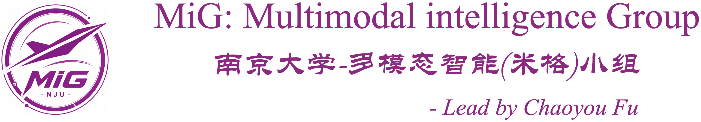
|
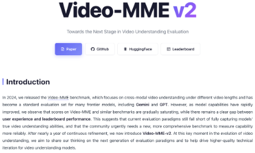 |
Video-MME-v2: Towards the Next Stage in Benchmarks for Comprehensive Video Understanding |
|
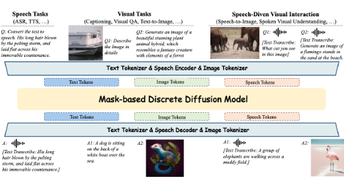 |
Omni-Diffusion: Unified Multimodal Understanding and Generation with Masked Discrete Diffusion |
|
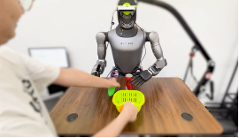 |
VITA-E: Natural Embodied Interaction with Concurrent Seeing, Hearing, Speaking, and Acting |
|
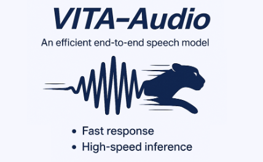 |
VITA-Audio: Fast Interleaved Cross-Modal Token Generation for Efficient Large Speech-Language Model |
|
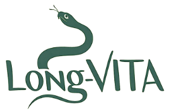 |
Long-VITA: Scaling Large Multi-modal Models to 1 Million Tokens with Leading Short-Context Accuracy |
|
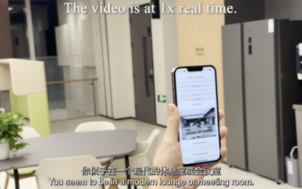 |
VITA-1.5: Towards GPT-4o Level Real-Time Vision and Speech Interaction |
|
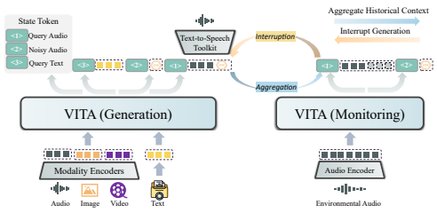 |
VITA: Towards Open-Source Interactive Omni Multimodal LLM |
|
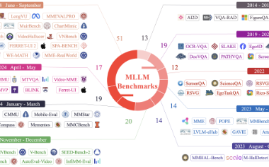 |
MME-Survey: A Comprehensive Survey on Evaluation of Multimodal LLMs |
|
Video-MME: The First-Ever Comprehensive Evaluation Benchmark of Multi-modal LLMs in Video Analysis |
|
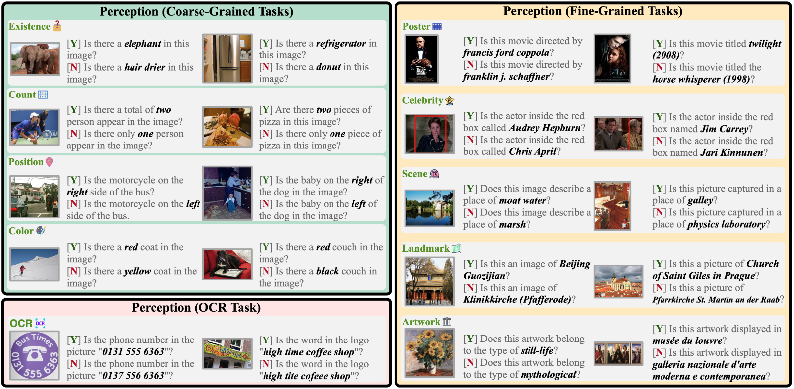 |
MME: A Comprehensive Evaluation Benchmark for Multimodal Large Language Models |
|
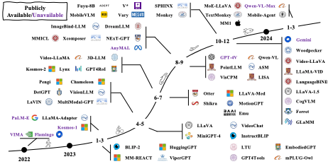 |
A Survey on Multimodal Large Language Models |
|
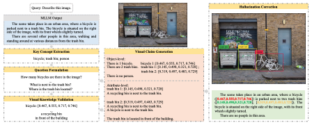 |
Woodpecker: Hallucination Correction for Multimodal Large Language Models |
|
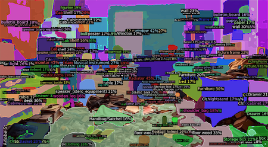 |
APE: Aligning and Prompting Everything All at Once for Universal Visual Perception |
|
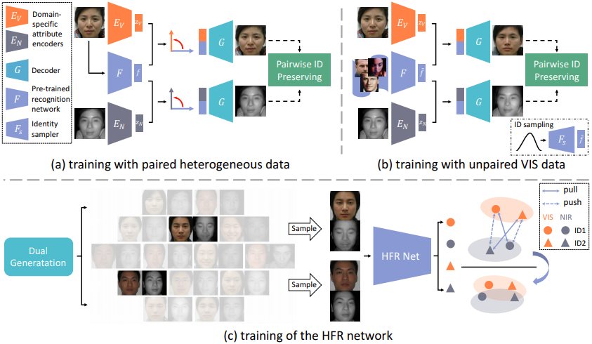 |
DVG-Face: Dual Variational Generation for Heterogeneous Face Recognition |
|
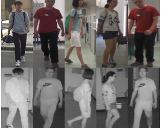 |
CM-NAS: Cross-Modality Neural Architecture Search for Visible-Infrared Person Re-Identification |
Area Chair: ICLR, ICML
Associate Editor: Pattern Recognition, IEEE T-BIOM
Conference Reviewer: NeurIPS, ICLR, CVPR, ICCV, ECCV, AAAI, ACM MM, IJCAI
Journal Reviewer: IEEE TPAMI, IJCV, IEEE TIP
[2025.07] 世界人工智能大会（WAIC）云帆奖·明日之星
[2025.04] 南京大学紫金学者
[2025.03] 第十届中国科协青年人才托举工程
[2024.11] 小米青年学者-科技创新奖
[2023.12] 北京市优秀博士学位论文
[2023.08] 中国科学院优秀博士学位论文
[2023.07] IEEE Biometrics Council Best Doctoral Dissertation Award
[2023.07] CVPR 2023 Outstanding Reviewer (232/7000+)
[2022.07] 中国科学院院长特别奖
[2022.07] 北京市优秀毕业生
[2021.12] 2022年“腾讯技术大咖”计划-T10
[2021.12] 2022年“阿里星”计划-P7
[2021.12] 博士研究生国家奖学金
[2021.11] 宝钢奖学金优秀学生奖
[2019.12] 硕士研究生国家奖学金
[2017.06] 安徽省优秀毕业生
[2015.11] 本科生国家奖学金
[2015.08] “飞思卡尔”杯全国大学生智能汽车竞赛全国总决赛二等奖